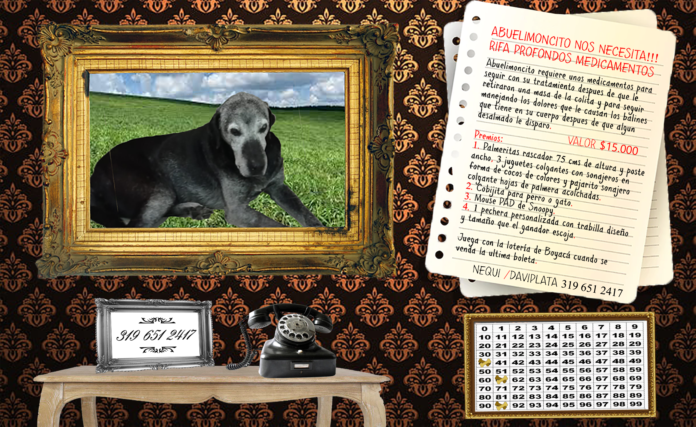
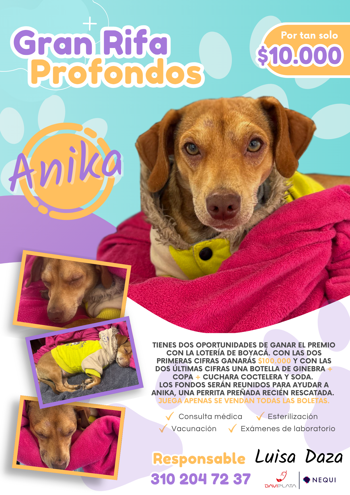
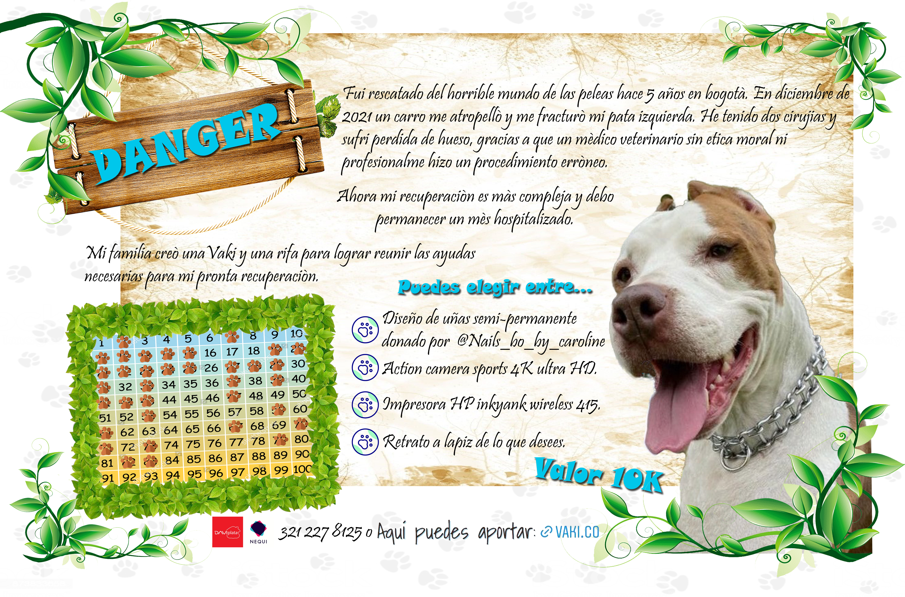
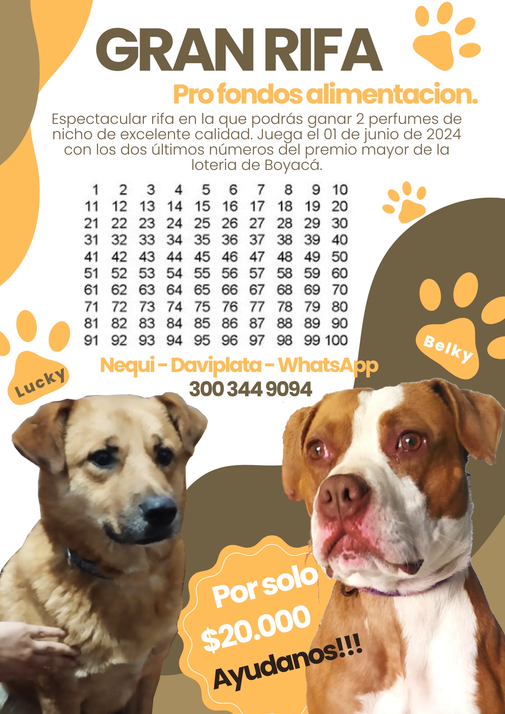
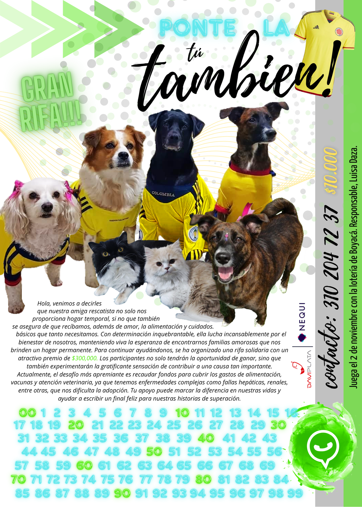

Rescate Animal
Diseño para causas animalistas: identidad visual, campañas de adopción, señalética para refugios y materiales de concienciación sobre bienestar animal.





Diseño para causas animalistas: identidad visual, campañas de adopción, señalética para refugios y materiales de concienciación sobre bienestar animal.




